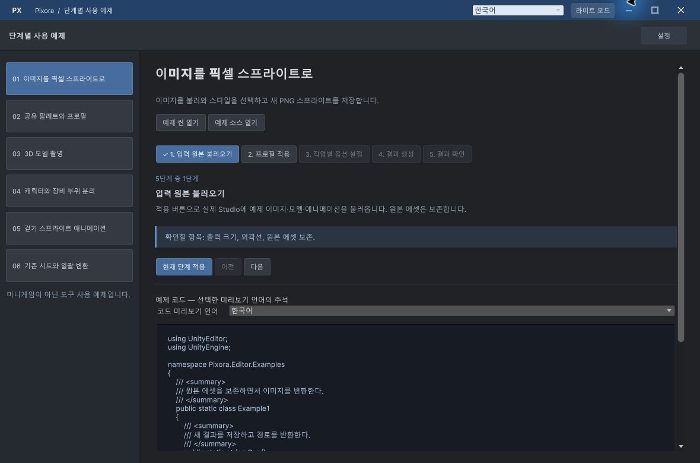
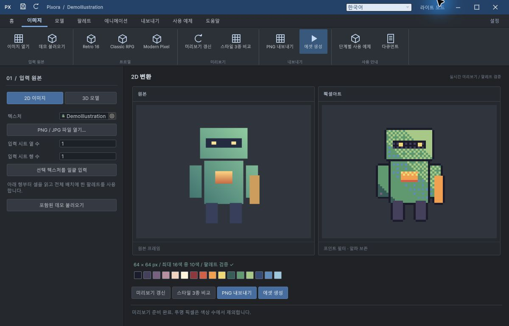

Tracefolio REPORTS & ISSUES
Tracefolio REPORTS & ISSUESPixora — 보조 창 디자인과 선명한 벡터 아이콘
구현·실행 검증·프로젝트 푸시 완료사용 예시와 스프라이트 창에도 공통 창 프레임과 라이트·다크 테마를 적용하고, 확대하던 래스터 명령 아이콘을 벡터로 교체했습니다.
사용 예시·스프라이트 창 디자인 수정과 Unity 실행 검증을 완료했습니다. 프로젝트 GitHub main의 로컬·원격 커밋 일치를 확인했습니다.
- 프로젝트 커밋: 9e933b2
- 작성 시각: 2026-10-29T19:56:19+09:00 / Asia/Seoul (KST)
- 버전: v1.1.1 / 실제 작업 결과
사용 예시 창
기본 OS 제목 표시줄과 Unity 도킹 탭 대신 Studio와 동일한 파란 제목 영역, 언어 선택, 테마 전환, 최소화·최대화·닫기를 적용했습니다. 창 이동·크기 변경을 지원하며, 닫았다 열면 저장된 위치와 크기로 복원됩니다. 예제 단계는 실제로 닫은 뒤에는 처음부터 시작합니다.


스프라이트 창
같은 창 프레임과 테마를 적용하고 재생·자동 격자·방향·FPS를 여유 있는 도구 영역으로 정리했습니다. 셀 선택 시 재생이 멈추고 방향 선택값과 미리보기가 함께 갱신됩니다. 의도된 픽셀 아트의 Point 표시와 원본 스프라이트는 유지했습니다.

깨져 보이던 명령 아이콘
미리보기 갱신을 포함한 리본·빠른 명령 아이콘을 UI Toolkit Painter2D 벡터로 교체했습니다. 작은 래스터 이미지를 늘려 표시하던 부분을 제거하고 라이트·다크 테마별 선 색상을 적용했습니다. 모든 창의 테마 전환이 함께 반영됩니다.


실제 검증 근거
- 환경: Windows / Unity 6000.0.83f1.
- Unity 자동 검증: 2,336개 항목 통과. 완료 2026-10-29 19:48:28 KST. 여섯 실제 예제 흐름, 아홉 언어 UI·코드 주석, 예제 코드 컴파일, 창 구성과 위치 직렬화 검증을 포함합니다.
- CUA 실행: 두 보조 창의 최소화·최대화·복원·닫기와 메뉴 재열기, 사용 예시 창 이동 후 위치 복원 확인.
- CUA 실행: 세 창의 라이트·다크 표시, 스프라이트 프레임·포즈 변화, 격자 켜기·끄기, 셀 선택과 방향 동기화, Studio 미리보기 갱신 확인.
- 문서 검증: 10개 장과 5개 이미지 링크 및 문서 스크립트 검증 통과. Git diff 공백 검사 통과.
- 프로젝트 근거 파일: Artifacts/TutorialVerification.json, Artifacts/WindowPolishVerification.json, Artifacts/DocumentationVerification.json. 위 이미지는 실제 Unity 화면입니다.
- 중복 테스트 출력 1,088개 파일은 프로젝트 Artifacts/Temp에 보존하고 기존 배포 샘플과 분리했습니다.
도구와 확인 범위
XERJ: 실패 — 노드 중지로 검색 불가, rg·현재 소스 확인으로 보완했습니다.
새 전역 지침에 따라 Affinity 전용 CLI README·VALIDATION을 읽고 doctor·status를 실행했습니다. 실제 응답은 ECONNREFUSED였습니다. 연결 상태 변경이나 앱 재시작 없이, 기존 코드 기반 Unity UI와 편집 가능한 벡터 소스를 직접 수정했습니다. Affinity 출력물을 만들었다고 보고하지 않습니다.
다른 운영체제·Unity 버전·디스플레이 배율은 미확인입니다. 보고서는 build.mjs로 생성하고 내용·로컬 링크를 검증하며, 브라우저 시각 렌더링은 미검증입니다. 인터넷 사이트 배포는 수행하지 않았습니다.
시간 기록
- 제안 시간: 20~35분.
- 시작 시각: 2026-10-29 19:36:47 KST.
- 실제로 완료된 시간: 19분 31초 / 2026-10-29T19:56:19+09:00 (KST). 구현·실행 검증·프로젝트 푸시·보고서 원본 작성까지의 시간입니다.
- HTML 빌드·링크 검증·보고서 저장소 동기화는 원본 작성 후 수행하며 최종 채팅에 전체 종료 시각을 기록합니다.